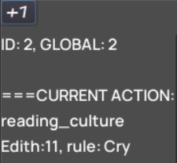
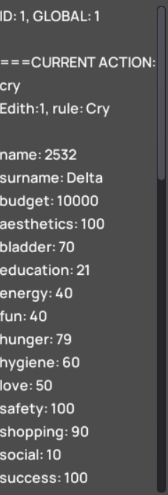
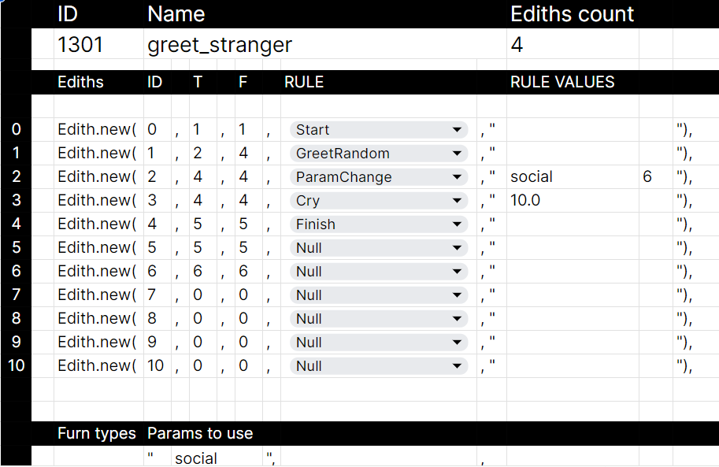
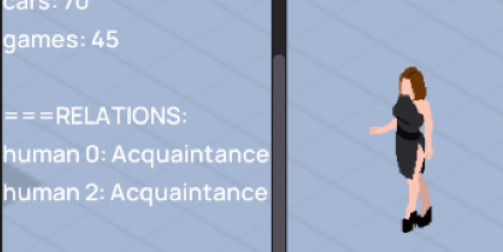
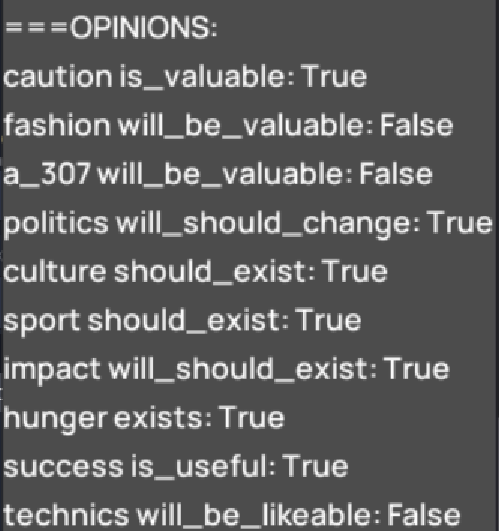
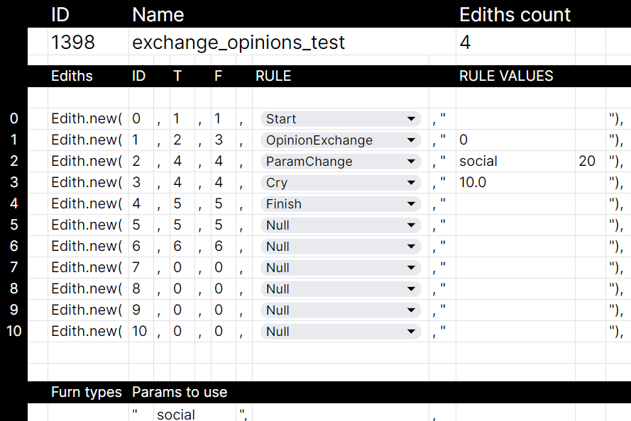
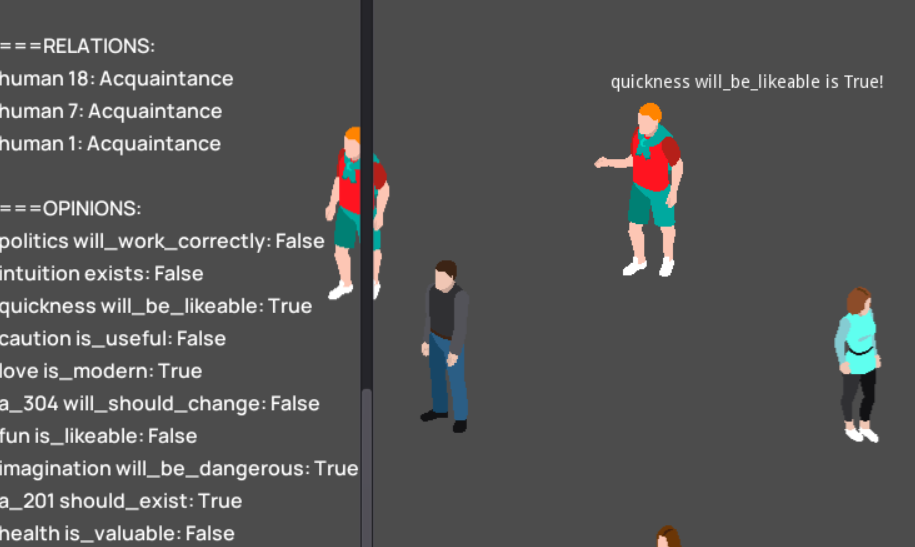
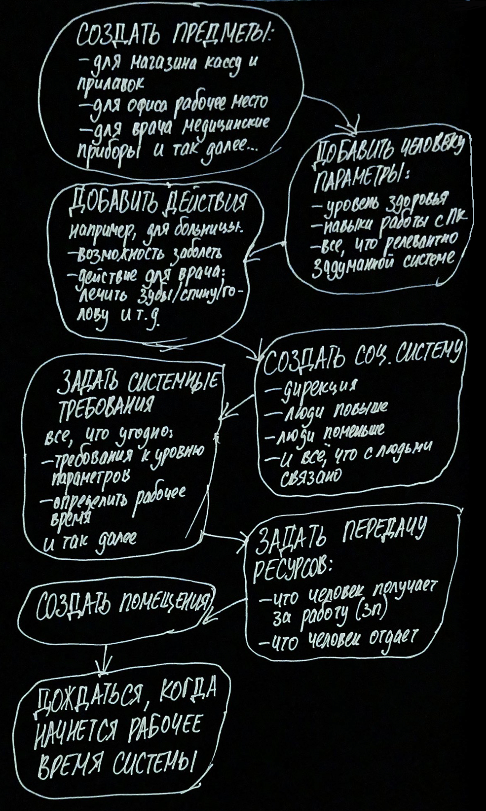
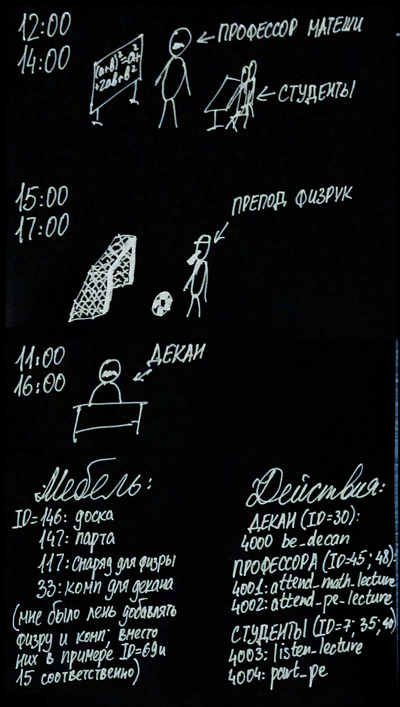
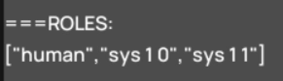

гайд
люди
Сейчас разберёмся по порядку, как в это играть.
Первое, с чего стоит начать – добавить в мир немного людей. Всё просто: нажимаем на "+1".
Люди начнут идти по своим делам, скорее всего ныть от того, что им не хватает каких-то потребностей. Обычно из названия действия, которое они пытаются выполнить, становится понятно, чего именно им не хватает.
Например, тут чувак ноет от того, что ему негде взять книжки, чтобы восполнить потребность в развитии (education), он своего рода интеллектуал.
Можно исправить положение, добавив книжный шкаф с помощью команды f подробнее о консоли
|
f
OP2
7
OP3
1
OP4
OP5
1000
OP6
300
OP7
OP8
OP9
OP10
|
Конкретно такие значения создадут книжный шкаф в точке (1000; 300) OP2Тип мебели OP3Вид мебели OP5Новая координата X OP6Новая координата Y |
Если шкаф не видно, то можно сдвинуть камеру стрелочками, подробнее о клавиатуре
Хотим, чтобы человек пошел социализироваться? Не, вопрос снизим ему уровень общения до критического:
|
p
OP2
1
OP3
social
OP4
10
OP5
OP6
OP7
OP8
OP9
OP10
|
Эти значения установят человеку с ID=1 параметр social на значение 10 OP2ID человека OP3Название параметра OP4Новое значение параметра |
Человек предпочел общению нытье? Точно, поскольку в игровом мире нет действий связанных с общением, люди попросту не знают, как общаться между собой!
создание действий
Самое время создать действие для общения. Здесь нам может помочь таблица для создания действий. Например, сделаем что-то такое:
Обязательно нужно указать в Params to use сам параметр, на который влияет наше действие, в данном случае social. Параметров может быть до 7 штук.
Справа на любом листе таблицы можно скопировать строку для консоли (String to copy for console). В нашем случае она будет выглядеть так:
Для добавления действия понадобится консольная команда a
|
a
OP2
1301/...
OP3
OP4
OP5
OP6
OP7
OP8
OP9
OP10
|
Добавляет новое действие в список имеющихся в мире OP2 та самая строка, которую мы взяли из таблицы создания действий
|
После такого попробуем еще раз снизить потребность (ведь в прошлый раз человеку было достаточно просто поныть и успокоиться) и увидим, как теперь они начинают знакомиться, даже машут ручкой:
Попробуем усложнить. Люди начали знакомиться, но еще не начали обмениваться мнениями. Попробуем выдать каждому по 10 рандомных мнений:
|
adisciv
OP2
10
OP3
OP4
OP5
OP6
OP7
OP8
OP9
OP10
|
Мнения добавятся только к уже существующим людям, для новых нужно будет повторить команду. |
Каждому человеку в мире достанутся 10 мнений касательно разных вещей, это выглядит примерно так:
Чтобы люди начали именно обмениваться мнениями, можно воспользоваться правилом ExtractInfo, либо OpinionExchange:
Допустим, обмен мнениями будет увеличивать уровень общения на 20:
Теперь они умеют о чем-то говорить! Чем больше они будут говорить, тем больше у всех будет мнений и почв для диалогов.
Любое действие для любого параметра сводится к простому набору Edith, что человек смог найти в мире, связанное со своим параметром, то он и начинает выполнять.
системы
Группы людей очень полезно объединять в системы для совместной работы и развития. Внутри системы люди могут производить товары и услуги.
Обычный флоу создания системы следующий (не все шаги обязательны каждый раз):
институты
Разберем на примере университета:
- Создать предметы (парту, доску и т.д.) -> добавить предметы нового типа, мб с параметрами
- Добавить человеку параметры (навыки для изучения, маркер образования: есть-нет и т.д.)
- Добавить действия (посетить/вести лекции, делать дз) -> составить цепочки Edith
- Создать соц.систему универа, добавить иерархию винтов (дирекция - преподы - студенты)
- Задать системные требования для всех винтов (студенты – балл вступительного экзамена, преподы – определенные навыки, и т.п.) -> винты должны делиться на роли для удобства, добавить смены (временные промежутки)
- Задать для винтов передачу ресурсов (для универа этот шаг пропускается, только получение зарплат и стипендий)
- Создать помещения для универа, добавить туда все необходимые предметы мебели
Если у нас будет два профессора, декан и три студента, получится что-то такое:
Теперь по порядку.
Пусть для студентов будет два новых параметра: perf_maths и perf_pe, успеваемость по математике и физкультуре:
|
p+
OP2
perf_maths
OP3
40
OP4
OP5
OP6
OP7
OP8
OP9
OP10
|
p+Добавляет всем существующим в игре людям новый параметр OP2Название нового параметра, здесь perf_maths OP3Значение параметра по умолчанию Внимание! Не работает на людей, добавленных после ввода этой команды.То же самое повторить для perf_pe |
Добавим нужные действия через команду а:
Декан просто будет сидеть у себя:
Препод по математике ведет свою пару:
Препод по физкультуре свою:
Студенты поочередно ходят то на математику:
... то вытягивают оценки по физре:
Далее создадим саму соц.систему универа. С универом можно создать пустую систему при помощи команды uni (в будущем предполагается отдельная команда для полностью рандомной соц.системы, но пока можно без этого)
Потом в новую систему нужно добавить винтов, для этого воспользоваться soc+:
ДЕКАН:
soc1/4/30///4000//1 11 5,2 11 5//45,48/budget:600
ПРОФЕССОР МАТЕМАТИКИ:
soc1/45/30///4001//1 12 2,2 12 2//7,35,50/budget:300
ПРЕПОД ФИЗРЫ:
soc1/48/30///4002//1 15 2,2 15 2//7,35,50/budget:250
СТУДЕНТЫ:
soc1/7/45///4003//1 12 2,2 12 2///
soc1/35/45///4003//1 12 2,2 12 2///
soc1/50/45///4003//1 12 2,2 12 2///
soc1/7/48///4004//1 15 2,2 15 2///
soc1/35/48///4004//1 15 2,2 15 2///
soc1/50/48///4004//1 15 2,2 15 2///
Студенты здесь добавляются два раза, т.к. "работают" в две смены: сначала в 12 часов (по вторникам и средам) сидят на математике, а потом в 15 часов идут на физру.
На каждую смену в соц.системе у человека добавляется социальная роль, в жизни это было бы "студент", "пациент", "рабочий" и так далее.
У всех, кроме декана, также есть начальство (декан сам себе начальник, но это можно изменить, добавить, например ректора, а над ректором министерство образования). Следите за руками: у профессоров начальником стоит ID=30, т.е. глобальный ID декана. У студентов все еще интереснее: на паре математики над ними профессор математики, а на физре препод по физре. Вишенкой на торте, преподы и декан получают зарплату, причем математик даже чуть выше физрука.
Последним шагом останется добавить все необходимые предметы мебели, дождаться 12 часов вторника и посмотреть за ходом обучения. Особо удачливые в рандоме студенты даже смогут получить 2 балла БРС за пару.
повышаем уровень
Естественно, этим все не заканчивается. Система тоже может выступать винтом другой системы (и тогда кто-то из низшей должен будет докладывать об обстановке в высшую). Винты могут выполнять несколько функций в разное время и иметь разные рабочие обязанности.
При этом, институционализация с помощью соц.систем касается не только больниц, заводов и универов: например, для создания тюрьмы или психбольницы можно пользоваться таким же концептом, только у винтов будет много запрещенных действий и рабочее время будет 24/7.
И даже можно обходить разного рода запреты: например, если завтра государство запретит однополые отношения и введет такие романтические действия для роли "гражданин" запрещенными, можно всё ещё устроить местное коммьюнити в рамках соц.системы, получить роль члена такого коммьюнити и разрешать себе действия через эту роль.